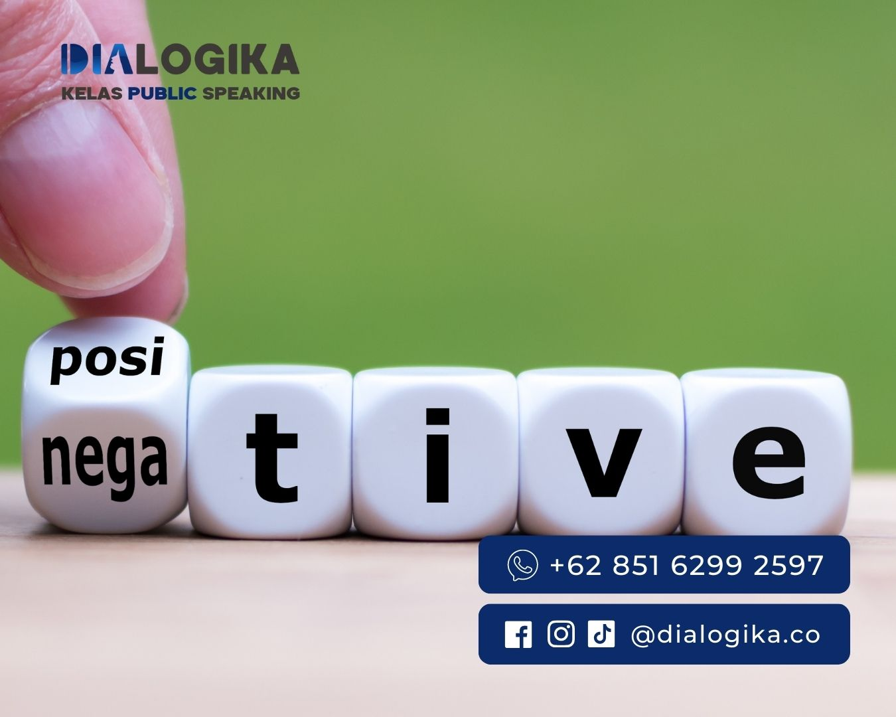

5 Cara Efektif Mengambil Keputusan Ketika Emosi: Berpikir Rasional dan Bijak
Mengambil Keputusan Saat Emosi - Kehidupan manusia merupakan sebuah perjalanan yang penuh dengan warna dan nuansa emosi yang sangat beragam. Setiap detiknya, diantara kita mengalami perasaan-perasaan yang intens seperti sedih, marah, Bahagia, kecewa dan lain sebagainya.
Berada pada fase-fase emosional, sering kali manusia dihadapkan pada keputusan yang perlu diambil. Namun, perlu diakui bahwasannya mengambil sebuah keputusan saat berada dalam kondisi emosional bisa menjadi suatu tantangan besar bagi kita.
Tak jarang kita merasa kesulitan untuk memutuskan sesuatu saat sedang dalam emosi, akan tetapi tidak perlu khawatir, karena ternyata ada beberapa cara atau strategi yang bisa kita lakukan untuk bisa mengambil sebuah keputusan yang tepat serta rasional.
Dalam artikel ini, kita akan membahas cara-cara tersebut dan tentunya dengan tetap mempertimbangkan keadaan emosional yang sedang terjadi.
“ Tidak ada keputusan yang baik diambil ketika emosi sedang memuncak. “
Tony Fernandes
Mengapa Harus Berpikir Jernih saat Emosi Muncul?
Emosi merupakan reaksi alamiah yang terjadi ketika seseorang menghadapi situasi atau stimulus tertentu Emosi bisa berpengaruh pada pikiran dan perilaku seseorang. Namun, penting untuk diingat bahwa keputusan yang diambil saat sedang emosi cenderung tidak rasional dan berdasarkan impulsif.
Emosi dapat berpengaruh terhadap kemampuan individu dalam berpikir jernih dan mempertimbangkan fakta secara objektif. Pada saat kita merasakan sebuah emosi yang kuat, misalnya kemarahan atau kesedihan,
pikiran kita dapat dibutakan oleh respon yang instan terhadap perasaan tersebut, hasilnya kita mungkin mudah tergoyahkan untuk segera mengambil keputusan dengan terburu-buru tanpa adanya melakukan pertimbangan untuk jangka Panjangnya.
Adanya bagian pada otak yang bisa mengatur emosi sehingga dapat mengambil alih kendali untuk bisa merespon kondisi atau situasi juga bisa menjadi salah satu hal yang membuat kita sulit untuk berpikir jernih.
Maka dari itu, reaksi emosional tersebut mendorong kita untuk bertindak tanpa didasari dengan pertimbangan yang rasional sehingga ketika sudah merasa tenang terkadang kita sering mengalami penyesalan.
Oleh sebab itu, saat kita dihadapkan pada keputusan penting dalam keadaan emosional, berusaha untuk tetap berpikir jernih sangatlah penting.
Dampak Negatif Mengambil Keputusan Berdasarkan Emosi

Sebagai individu, dalam kehidupan sehari-hari emosi yang bergejolak seringkali muncul dalam diri kita. Perasaan emosional ini muncul dalam berbagai bentuk misalnya saja kesedihan, kemarahan.
mengambil sebuah keputusan dalam keadaan atau situasi emosi memiliki dampak negatif yang bagi diri kita sendiri dan bahkan orang-orang disekitar kita. Inilah yang seringkali menyebabkan konsekuensi yang tidak diinginkan yang akhirnya menjadi sebuah penyesalan di kemudian hari.
-
1. Rusaknya Citra Diri
Saat munculnya emosi, seringkali kita mengambil keputusan dengan tidak mempertimbangkan efek jangka Panjang terhadap diri kita sendiri.
Bahkan tidak menutup kemungkinan jika keputusan yang diambil ternyata keputusan yang salah dan bisa merugikan, tanpa kita sadari hal ini yang berakibat pada hancurnya rasa percaya diri.
-
2. Hilangnya kesempatan
Ketika tidak bisa mengendalikan emosi, hal ini lah yang menjadi penyebab dari kita akan melewatkan peluang yang penting. Karena ketika manusia hanya terus fokus pada emosi nya tersebut, ia tidak akan lagi mampu untuk melihat kesempatan atau peluang yang ada atau bahkan mengambil sebuah langkah yang tepat.
-
3. Menimbulkan Konflik Interpersonal
Emosi tinggi memicu adanya konflik interpersonal ( individu atau kelompok ). Seringkali kalimat atau kata-kata yang kita keluarkan yang dipicu oleh perasaan emosi berakibat pada rusaknya atau kerenggangan dalam hubungan sehingga sulit untuk diperbaiki.
Alih-alih memikirkan dampak yang mungkin terjadi, kita cenderung hanya merespon secara refleks akan apa yang kita rasakan saat itu. Kita bisa merasa tertekan untuk bertindak segera mungkin dalam situasi tersebut tanpa memikirkan dampak yang terjadi dari tindakan kita.
Ingatlah, kamu pasti akan menyesal atas hal yang diambil dengan pikiran panas, karena bisa jadi keputusan tersebut tidak sesuai dengan nilai-nilai dan tujuan hidupmu.
Cara Mengambil Keputusan Ketika Emosi
-
1. Beri Waktu untuk Meredakan Emosi
Ketika kamu merasa emosi mulai mempengaruhi pikiranmu, cobalah untuk memberi diri sendiri waktu untuk meredakan diri. Kita juga perlu memahami bahwa emosi adalah sesuatu yang sementara dan bisa dikendalikan Cobalah untuk mengurangi dampak emosi tersebut sebelum memutuskan sesuatu.
“ Emosi yang mereda adalah fondasi terbaik untuk mengambil keputusan yang bijaksana.”
Soekarno
-
2. Tanyakan Pertanyaan yang Rasional dan Objektif
Sebelum mengambil keputusan, ajukan pertanyaan-pertanyaan yang rasional dan objektif kepada dirimu sendiri. Pertanyaan seperti "Mengapa saya merasa emosi?" dan "Apa akibat yang terjadi jika saya mengambil keputusan ini saat ini?" dapat membantumu untuk melihat situasi dari sudut pandang yang lebih luas.
-
3. Cari Alternatif Pilihan
Dalam situasi emosional, kita cenderung terfokus pada pilihan-pilihan yang hanya terlihat di depan mata. Oleh sebab itu, carilah alternatif pilihan yang lebih bijak dan rasional.
Cobalah untuk melihat dari berbagai sudut pandang yang berbeda dan pertimbangkan solusi yang tidak hanya memenuhi emosi saat ini, tetapi juga mendukung tujuan dan nilai-nilai jangka panjangmu.
-
4. Perhatikan Akibat Jangka Panjang
Penting untuk melihat dampak keputusanmu dalam jangka panjang. Jika keputusan yang kamu ambil saat emosi bisa memberikan kepuasan sesaat, tetapi merugikan dalam jangka panjang, maka lebih baik hindari keputusan tersebut. Ingatlah bahwa apa yang kamu inginkan saat emosi tidak selalu sejalan dengan apa yang kamu butuhkan dalam hidup.
-
5. Pertimbangkan Masukan dari Orang Lain
Berpikir bahwa kamu mampu mengatasi segalanya sendiri ketika emosi muncul adalah kesalahan. Cobalah untuk mengurangi keegoisan dengan membuka diri terhadap masukan dari orang lain.
Bicarakan perasaanmu dengan orang yang bisa memberimu pandangan obyektif dan bijak. Orang luar seringkali bisa melihat situasi dengan lebih jernih dan memberikan saran yang berharga.
“ Jangan biarkan emosi mengontrol dirimu saat mengambil keputusan, sebaiknya biarkan akal sehatmu berbicara.“
Habibie
Tidak semua waktu adalah waktu yang tepat dalam mengambil sebuah keputusan. Karena suatu keputusan yang bijak perlu adanya pemahaman yang baik mengenai “kapan waktu yang paling tepat untuk dapat mengambil langkah itu?”.
Waktu yang tepat dalam pengambilan keputusan
-
1. Saat keadaan kita sedang tidak marah atau sedih
Keputusan yang diambil saat keadaan hati sedang hancur atau tidak baik-baik saja menyebabkan timbulnya konsekuensi yang tidak diinginkan oleh kita.
Sebaliknya, mengambil keputusan yang bijak perlu adanya ketenangan pada emosi kita sendiri sehingga membantu kita untuk dapat mengambil pilihan atau keputusan dengan hati-hati.
-
2. Setelah kita beristirahat dengan cukup
Dengan istirahat kita yang cukup seperti kualitas tidur yang baik, hal tersebut ternyata dapat membuat kita bisa lebih mempertimbangkan untuk setiap risiko yang seharusnya kita ambil.
Karena, istirahat yang cukup juga secara tidak langsung membuat kemampuan otak kita untuk dapat memproses semua informasi dengan sangat baik.
-
3. Saat pagi hari sebelum melakukan aktivitas
Melakukan aktivitas dalam kehidupan sehari-hari terkadang membuat kita merasa lelah secara fisik maupun mental. Seringkali lelah nya fisik dan mental kita tersebut mengakibatkan berkurangnya kemampuan kita dalam hal pengambilan keputusan.
Oleh karena itu, saat pagi hari pikiran kita masih sangat segar dan mengambil keputusan di pagi hari menjadi waktu terbaik.
-
4. Setelah konsultasi dengan orang terpercaya
Tidak ada salahnya untuk meminta masukan dari orang yang kita percayai saat dihadapkan dengan keputusan yang sulit, setelah kita mendengarkan pandangan atau masukkan dari mereka ini juga menjadi waktu yang tepat dalam pengambilan sebuah keputusan.
Karena, dari pendapat atau sudut pandang yang tentunya berbeda-beda kita akan lebih melihat situasi apapun secara luas.
Kesimpulan
Ketika emosi muncul, mengambil keputusan bisa menjadi tugas yang menantang. Emosi adalah bagian penting dari kehidupan, tetapi mengizinkan emosi memimpin pengambilan keputusan kita bisa berakibat buruk. Maka, dalam mengambil keputusan ketika sedang emosi, penting untuk tetap berpikir rasional dan bijak.
Emosi bisa mempengaruhi keputusan yang diambil namun kuncinya adalah tidak membiarkan emosi mengambil alih sepenuhnya. Cobalah untuk melihat dari berbagai sudut pandang, pertimbangkan dampak jangka panjang, dan beri waktu pada dirimu untuk meredakan emosi sebelum mengambil keputusan penting, perlu memahami juga kapan waktu yang tepat untuk kita bisa mengambil keputusaan.
Ingatlah bahwa penyesalan sering kali muncul dari keputusan yang diambil dalam keadaan emosional yang tinggi. Dengan berpikir rasional dan bijak, kamu akan lebih mampu menghindari keputusan yang tidak tepat dan membangun kehidupan yang lebih baik.